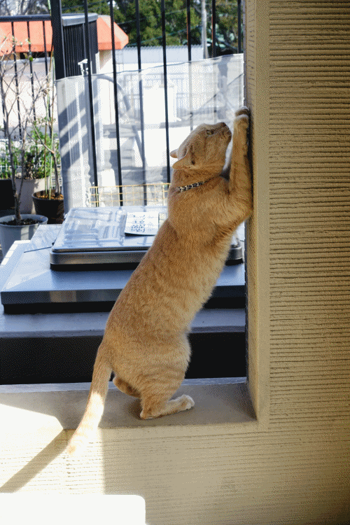
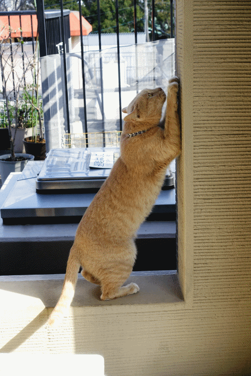

最高到達点 [梅吉]
ぐんぐんのびーる梅吉！

金曜日は風に吹かれながらテクテク歩いて厄除けのお参りをして
いつも行列のお店に並ばずに入店してヘヴィメタルを聴きながら坦々麺を食べたり
そのスープにご飯を入れてしまう暴挙に出て（お茶碗小盛りごはんをおっとと半分こですよ！）
ああーー！！炭水化物過多だけど全然後悔してない美味しかったんだものーと思ったり。
土曜日は早咲きのコシノヒガンを見に行って
全体的に５部咲きの桜をみながら大起水産（関西限定ネタ！？）で買ったお寿司でお外ランチして
ソメイヨシノが記録的に早い開花になりそうだからと言って
早咲きの桜が早く咲くとは限らないことに気づいたり
ベランダのプチリフォームのために資材を買いに行ったり。
今までスルーしてた近所の商店街のお肉屋さんのお安い切り落とし牛肉が
めっちゃ美味しいことに気づいたお夕食だったり。
最終日は二日間サボってたことをあれこれ片付けたり梅吉のお世話にいそしんだり。
連休中の三日間、PCの前に座る時間があまり取れなかったです。
ご訪問を失礼していた皆様のところへは今日から伺わせていただきますねm(_ _)m
申し訳ない様な手抜き記事ですがコメント欄は空けておきまーす (≧▽≦)
（なのでコメントはお気になさらずに！）
 ↑ガブッと一押し↑
↑ガブッと一押し↑

金曜日は風に吹かれながらテクテク歩いて厄除けのお参りをして
いつも行列のお店に並ばずに入店してヘヴィメタルを聴きながら坦々麺を食べたり
そのスープにご飯を入れてしまう暴挙に出て（お茶碗小盛りごはんをおっとと半分こですよ！）
ああーー！！炭水化物過多だけど全然後悔してない美味しかったんだものーと思ったり。
土曜日は早咲きのコシノヒガンを見に行って
全体的に５部咲きの桜をみながら大起水産（関西限定ネタ！？）で買ったお寿司でお外ランチして
ソメイヨシノが記録的に早い開花になりそうだからと言って
早咲きの桜が早く咲くとは限らないことに気づいたり
ベランダのプチリフォームのために資材を買いに行ったり。
今までスルーしてた近所の商店街のお肉屋さんのお安い切り落とし牛肉が
めっちゃ美味しいことに気づいたお夕食だったり。
最終日は二日間サボってたことをあれこれ片付けたり梅吉のお世話にいそしんだり。
連休中の三日間、PCの前に座る時間があまり取れなかったです。
ご訪問を失礼していた皆様のところへは今日から伺わせていただきますねm(_ _)m
申し訳ない様な手抜き記事ですがコメント欄は空けておきまーす (≧▽≦)
（なのでコメントはお気になさらずに！）

カフェオレ色の梅吉

梅吉 2023年8月10日 永眠


梅吉と出会った譲渡会

犬猫の理由なき殺処分ゼロ
妄想広告
UMEKICHI 光

爆発的に早い！
時々攻撃的！
Thanks to Mr.Boss365
爆発的に早い！
時々攻撃的！
Thanks to Mr.Boss365

色々まとめて片付けてしまえる時にやらないと、またいつになるか分かりませんものね。充実した三連休で良いではありませんか。
梅吉さんがだんだん登るのも面白かったです。
by zombiekong (2020-03-23 00:25)
梅吉さんの壁登りかと思った（ﾟ□ﾟ）
by 英ちゃん (2020-03-23 00:27)
梅吉さんの背筋びよーん☆
思わずこっちまで背筋伸ばしてしまいました(笑)
お肉屋さんの切り落としってなんであんなに美味しいのでしょう～
そして安っいお魚屋さんのアラも見逃せません(^^♪
by yamatonosuke (2020-03-23 01:32)
梅吉さん、猫？背筋がグーーーーーーーーーンと伸びてますね。
by ニコニコファイト (2020-03-23 07:11)
３連休の土曜日に出社だった私は
金曜日に墓参りに行き帰宅後RUN、土曜日は出社後帰宅RUN
昨日は昼過ぎにRUNのRUN三昧でした(⌒-⌒; )
かみさんは洗濯三昧の３連休だったみたいですw
梅吉さん、伸びますねぇ=(^.^)=
ニャンコって伸びたり縮んだり自由自在ですよね( ^ω^ )
by ニッキー (2020-03-23 07:28)
背筋がグーン！！
これを見て私もストレッチしなくっちゃと
思い出しました（笑
by きぃ (2020-03-23 08:44)
のんびりと、でも楽しめた三連休だったようでなによりです。
梅吉さん同様にの～びのびされたかな。
こちらは慌ただしくポケ活三昧でしたよ(^^;)
by ChatBleu (2020-03-23 08:46)
伸びっぷりがすごい～～～！
炭水化物、美味しいですよね。
美味いもんいっぱい食って、精神的にも肉体的にも
栄養つけて免疫力アップと行きましょう！！
by よーちゃん (2020-03-23 09:32)
こんにちは！
これは爪とぎでしょうか・・？
by Take-Zee (2020-03-23 09:54)
梅吉さんの爪研ぎかと思いました！
グーと伸びていますね(^^)
by ma2ma2 (2020-03-23 10:23)
梅吉さん長い！ スリムな猫さんは何だか長いですよね。
うちのタルちゃんは太くて短く見えます。Naoちゃんが長くなってきた（T-T
ヘヴィメタルが流れるラーメン屋さん？想像ちぅ・・・（-”-
担々麺ではありませぬが・・・私も韓国スープ屋さんで同じくご飯を入れて
まいうー状態を味わっておりました(;^_^A
桜はもうひといきな状態だったようですね。近所のソメイさんはまだ蕾。
なのにハクモクレンは終わりかけで茶色くなった花弁が痛々しかったです。
お花の見頃のタイミングってなかなか難しいですよね。
by marimo (2020-03-23 11:21)
充実した連休だったみたいですね^^
この連休はほんっと天気も良かったので
わたしもぷらぷらしてましたわー。
出掛けていたので、あおは少し不機嫌(笑)
by リュカ (2020-03-23 11:30)
柱の傷はおととしの～♪ ってまだ早すぎる・・。
しかし私が見ても爪とぎしやすそうな柱ですね(#^^#)
充実した連休だったようで何より。
わたくしめは洗濯三昧、シーツや布団カバーがすっきり乾いてご機嫌です^^
近所の公園の桜はまだ蕾、今朝ようやくチラホラほころんでました。
個人的には桜の下でドンチャン騒ぎするより、桜は桜で見て撮って楽しんで、寒くないところでじっくり腰を据えて飲む方が好き^^;
夜桜宴会ってほんま寒いんですもん・・・。
by ゆきち (2020-03-23 12:36)
こんにちは。
「のびーる梅吉」凄い伸びです！！（笑）
尻尾と太腿が部位が良い感じ（爆）また、壁の仕上げもお洒落です。
充実の休日生活だったと想像、羨ましいです。小生、散策後は仕事データ作成。
「ベランダのプチリフォーム」が気になりました。
ブログアップを楽しみにしています！？(=^･ｪ･^=)
by Boss365 (2020-03-23 13:46)
ぐんぐんのびーる梅吉さん、爪とぎ？？？
すごく長いですね！！
ウチの猫はこんなに伸びません。
by yes_hama (2020-03-23 21:53)
こちらは当初の予想よりも一週間ぐらい遅い開花になりました。
でも去年よりちょっと早いみたい＾＾
by ぽちの輔 (2020-03-24 07:02)
爪研ぎに見えますが、ただの伸び～なんでしょうか！
くつろいでいる様子が伝わってきます。幸せそうですね(^_^)
by kou (2020-03-24 13:43)
梅吉君、のびてますね～
ぐ～ん、って漫画みたいに横に書きたくなっちゃう！
男性の足元からはニャンコさんたちにとって
香しいにおいがでているのかもしれませんね
by 藤並 香衣 (2020-03-24 23:55)